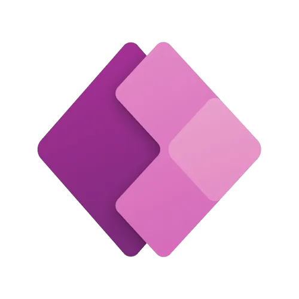

Microsoft · 2023
MSCD
application de gestion des contrats
Une solution Power Apps déployée chez Avanade pour maîtriser chaque étape d'un contrat — de la prise en charge au suivi qualité. Cette page rassemble les écrans partagés avec les parties prenantes pour raconter l'application, tout en gardant les données client confidentielles.

L'idée
Cas interne
03 — Le résultat
Suivi centralisé des contrats, de la signature à la livraison
Process et étapes de validation standardisés entre les équipes
Meilleure visibilité et traçabilité pour la gestion de la qualité
Suivi manuel réduit grâce à des workflows automatisés
Où ça en est
Projet interne développé chez Avanade — accès en ligne plus disponible. Présenté via des captures pour raisons de confidentialité.
Galerie


Construit avec
Power AppsSharePointPower Automate